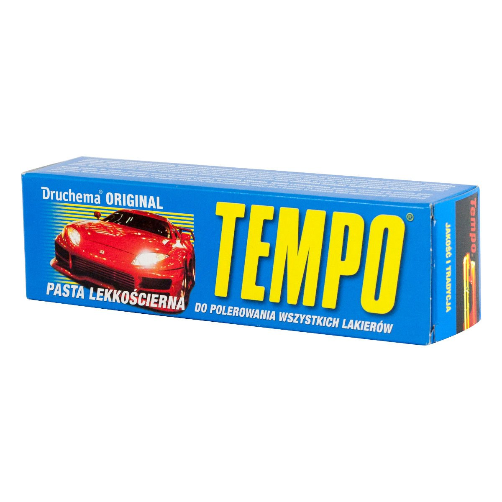
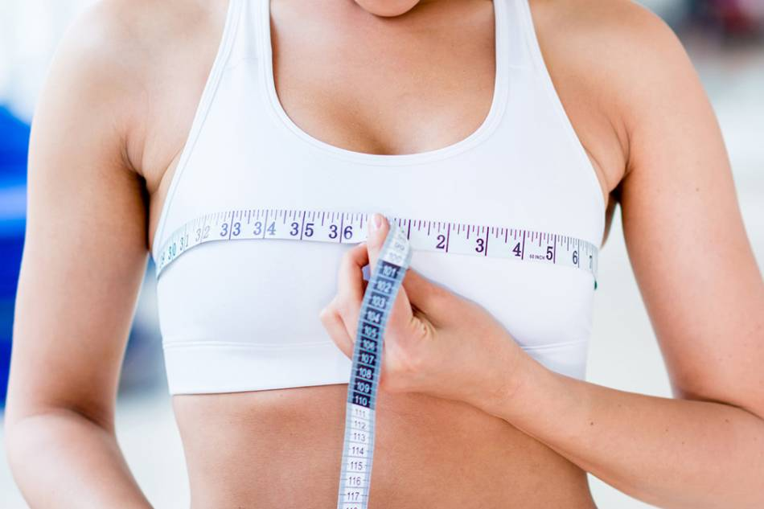
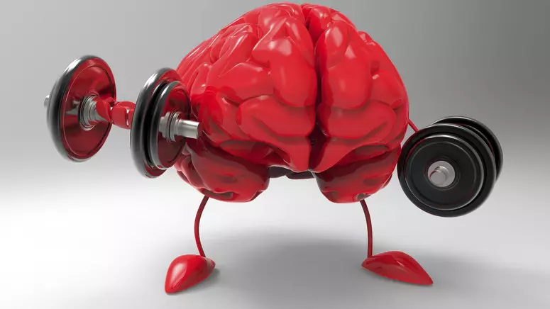

Porady
Oto kilka przydatnych porad dotyczących kulturystyki i siłowni:
Zawsze rozgrzewaj się przed treningiem, aby uniknąć kontuzji.
Możesz rozpocząć od kilkuminutowego cardio, a następnie skupić się na rozciąganiu i mobilizacji stawów.
Utrzymuj odpowiednie tempo treningu i nie przesadzaj ze zwiększaniem obciążenia.
Pamiętaj, że kulturystyka to długoterminowy proces, więc stopniowo zwiększaj intensywność i obciążenie, aby uniknąć nadmiernego przeciążenia i kontuzji.
Monitoruj postępy i prowadź dziennik treningowy, aby śledzić swoje osiągnięcia.
Zapisuj wykonane ćwiczenia, ilość powtórzeń, użyte obciążenie oraz notuj swoje odczucia. Dzięki temu będziesz mógł dokładnie śledzić swoje postępy i dostosować treningi do własnych potrzeb.
Wprowadź zmienność w swoim treningu, aby uniknąć stagnacji.
Regularnie zmieniaj ćwiczenia, układy treningowe, ilość powtórzeń i tempo. To pomoże Twoim mięśniom ciągle się rozwijać i uniknąć osiągnięcia punktu, w którym przestają reagować na trening.
Słuchaj swojego ciała i daj mu czas na regenerację, jeśli jest to konieczne.
Pamiętaj, że regeneracja jest kluczowa dla rozwoju mięśni. Daj sobie czas na odpoczynek między treningami, zapewnij sobie odpowiednią ilość snu i zadbaj o zdrową dietę bogatą w składniki odżywcze.